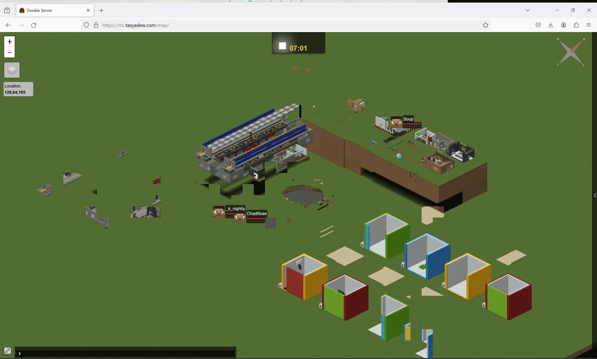

Go to the sites
mc.tasyadew.com
- Accessing the link from website will take you to the Minecraft website. (port 80)
- Accessing the link from Minecraft will allow you to enter the Minecraft server. (port 25565)
Tech Stack
- Astro for web development
- Oracle Cloud for hosting minecraft server on the cloud
- Operating System: Ubuntu Linux
- Nginx for reverse proxy
- Cloudflare for DNS record management
- Docker for containerization of Minecraft server
Why I started this project?
This Minecraft server project was started to help my friend, who initially hosted a Minecraft server on his PC. Our friends play the game at different times, requiring the server to be available 24/7. Initially, he used a free Minecraft hosting service called Aternos, but with over 150+ mods installed, the server became extremely laggy and barely playable. He then self-hosted from his PC using free DDNS with No-IP, which worked well until his PC broke down due to the constant need to be on 24/7.
After hearing about his issue, I suggested that we could collaborate and deploy a server on an Oracle VPS. Fortunately, I had an underutilized VPS that could host the Minecraft server 24/7. Initially, I thought it would be a simple two-week project to set up the server and ensure all mods that require special ports were functioning. However, the project grew larger in scope than just deploying a game to a VPS. Here are a few notable features I have implemented:
- Setting up a firewall to open ports using firewallcmd instead of UFW, since Oracle VPS does not support UFW (a lesson learned the hard way).
- Creating an official website for the game on the VPS, including a Minecraft map, a development blog, and a guide on how to join the server. (still in progress)
- Using NGINX to reverse proxy ports for two Minecraft servers, and the Minecraft website.
- Applying for an SSL certificate using Let’s Encrypt and Certbot.
- Developing an autobackup system for both Minecraft servers using Docker. (still in progress)
In the future, I hope to write a comprehensive guide on how to set up a Minecraft server from start to finish, for anyone interested in recreating this project.
Map Preview of the server
Can be accessed from map.tasyadew.com or mc.tasyadew.com/map
Latest Map Server:

Old Map Server:
